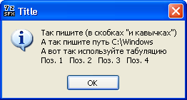

Общая информация о файле конфигурации
Данный SFX модуль сохраняет все свойства стандартного SFX модуля архиватора 7-Zip и добавляет возможности, перечисленные в этой документации.
- Файл конфигурации ДОЛЖЕН БЫТЬ сохранен в кодировке UTF-8.
- Существуют 4 типа команд запуска программ: 'AutoInstall', 'AutoInstallX', 'RunProgram' и 'ExecuteFile'. В файле конфигурации могут одновременно присутствовать любые из этих 4-х типов и даже все, но после запуска SFX архива может выполняться только один тип команд запуска.
- Параметры 'AutoInstall', 'AutoInstallX', 'RunProgram', 'Delete', 'DeleteX', 'SetEnvironment', 'Shortcut' и 'ShortcutX' - множественные, т.е. могут присутствовать в файле конфигурации неограниченное количество раз. Указанные параметры, если их несколько в пределах своего типа, обрабатываются в той последовательности, в которой идут в файле конфигурации.
- Команд запуска программ в каждом типе ('AutoInstall', 'AutoInstallX' и 'RunProgram') может быть несколько, обрабатываются они (в пределах каждого типа) в той последовательности, в которой указаны в файле конфигурации, при этом ожидается окончание предыдущей команды, а после этого запускается следующая.
- 'AutoInstall' запускается нажатием кнопки "Да/OK" в окне 'BeginPrompt', с нажатой кнопкой [Shift], или из командной строки. 'AutoInstallX' запускается только из командной строки. 'ExecuteFile' и 'RunProgram' запускается только из файла конфигурации.
Одновременное наличие 'ExecuteFile' и 'RunProgram', в файле конфигурации, возможно, но нецелесообразно, т.к. 'ExecuteFile' имеет приоритет и все 'RunProgram' будут проигнорированы. Однако 'RunProgram' множественные, не требуют дополнительных параметров для ввода ключей, и поэтому предпочтительнее.
- Для 'ExecuteFile', если нужно указать ключи, применяется 'ExecuteParameters'. Если ключей нет, то 'ExecuteParameters' может отсутствовать.
- Для 'RunProgram', если нужно указать путь к исполняемому файлу, может применяться 'Directory'. Путь к исполняемому файлу может быть указан непосредственно в 'RunProgram'. Параметр 'Directory' может быть только один и используется только для первого 'RunProgram', но не обязателен и может отсутствовать совсем.
- Взаимное расположение параметров 'ExecuteFile' и 'ExecuteParameters', а также 'RunProgram' и 'Directory' значения не имеет.
- Алгоритм выбора типа команд запуска следующий: если указано использование 'AutoInstall' ([Shift], командная строка) или 'AutoInstallX' (командная строка) - используется они. Если нет - проверяется наличие 'ExecuteFile' и, если есть, то используется он (все 'RunProgram' при этом игнорируются). Если и 'ExecuteFile' нет - проверяется 'RunProgram'.
- Работают файловые ассоциации, т.е. можно указывать RunProgram="Setup.msi", не используя при этом StartX.exe, msistub.exe и подобные утилиты.
- Если 'RunProgram', 'ExecuteFile', 'AutoInstall' или 'AutoInstallX' отсутствуют, и распаковка происходит во временную папку ('InstallPath' отсутствует), будет сделана попытка выполнить файл "setup.exe" (если он имеется в корне архива). "'InstallPath' отсутствует" означает - либо отсутствие параметра 'InstallPath' в файле конфигурации, либо InstallPath="", либо стирание пути, в соответствующем поле редактирования, после запуска архива. Если путь распаковки указан - попытки выполнить "setup.exe" не будет.
- Исполняемый после распаковки файл не обязательно должен располагаться в корне архива. Последовательность поиска: сначала в папке распаковки, затем по путям, указанным в %PATH%.
- Параметры 'AutoInstall', 'Delete', 'Shortcut' могут быть простые или литерные 'AutoInstallX', 'DeleteX', 'ShortcutX', где X - литера варианта соответствующей автоматической установки. В качестве X допустимы [0...9], [A...Z], [a...z] (только один символ).
ВАЖНО! Следующие двухсимвольные последовательности в "значение_параметра" заменяются односимвольными:
- \\ = \
- \" = "
- \n = перевод строки
- \t = табуляция
Если надо указать обратный слеш (\) (например, в путях или тексте диалога), НЕОБХОДИМО использовать ДВОЙНОЙ (\\), а если "значение_параметра" или текст диалога содержит кавычки ("), НЕОБХОДИМО перед ними использовать обратный слеш (\") (правило "лидирующего слеша").
Двухсимвольные последовательности \n и \t зависят от регистра. Т.е., \N и \T НЕ будут заменяются односимвольными.
Модуль также поддерживает относительные пути в следующих параметрах и ключах:
- 'AutoInstall', 'AutoInstallX', 'Directory', 'ExecuteFile', 'RunProgram' - относительно папки, в которую произведена распаковка
- 'ExecuteOnLoad', 'PreExtract', 'PreExtractX' - относительно временной папки создаваемой модулем, путь к папке находится в переменной %SfxVarApiPath%
- 'InstallPath', '-sfxconfig' - относительно папки программы, из которой произведен запуск SFX архива
ВНИМАНИЕ! Это не обязательно папка, в которой расположен SFX архив. Если SFX архив запущен из другой программы (.bat, .cmd, и т.д.), то текущей будет папка этой программы.
- 'Delete', 'DeleteX' - относительно папки, в которой расположен SFX архив
Для 'RunProgram' и всех вариантов 'AutoInstall'-ов МОЖНО/НУЖНО заключать путь и имя исполняемой программы в дополнительные кавычки.
МОЖНО, даже если имя и путь к исполняемому файлу НЕ СОДЕРЖАТ пробелов, НУЖНО, если СОДЕРЖАТ пробелы, т.к. имя и путь к исполняемому файлу формируются ПОСЛЕ разбора переменных среды. Например:
RunProgram="nowait:%ProgramFiles%\\test.exe /s"
В НАПИСАНИИ имя и путь к исполняемому файлу не содержит пробелов, но после подстановки оно МОЖЕТ содержать пробелы. Поэтому лучше всегда писать так:
RunProgram="nowait:\"%ProgramFiles%\\test.exe\" /s"
Префиксы и ключи исполняемой программы в дополнительные кавычки НЕ ВКЛЮЧАЮТСЯ.
Для 'ExecuteFile' необязательны дополнительные кавычки даже для имен с пробелами (т.к. в нем не может быть ключей командной строки). Т.е. предыдущий пример может быть записан так:
ExecuteFile="nowait:%ProgramFiles%\\test.exe"
ExecuteParameters="/s"
Многострочный текст допустим в диалогах следующих параметров:
- 'BeginPrompt'
- 'CancelPrompt'
- 'ExtractDialogText'
- 'ExtractPathText'
- 'FinishMessage'
- 'HelpText'
В тексте допустимы любые символы. Слеши (\) и кавычки (") попадают под правило "лидирующего слеша" (см. выше), т.е. написав
HelpText="Так пишите (в скобках \"и кавычках\")\nА так пишите путь C:\\Windows\nА вот так используйте табуляцию\nПоз. 1\tПоз. 2\tПоз. 3\tПоз. 4"
получим следующее диалоговое окно:

Размеры окна диалога зависят от длины строк и их количества, и будут автоматически изменяться.
Прервать работу SFX архива можно:
- Нажатием кнопки "Нет" или "Отмена" в тех диалогах, где они предусмотрены
- Нажатием кнопки "Закрыть" (которая в правом верхнем углу окна) за исключением диалога распаковки, если кнопка блокирована параметром 'GUIMode' или ключом '-gmX' равным 1
- Нажатием кнопки 'ExtractCancelText' в диалоге распаковки, если она не скрыта параметром 'GUIMode' или ключом '-gmX' равным 1
- Нажатием клавиши [Esc] на клавиатуре (если параметр 'GUIMode' или ключ '-gmX' равен 1, то в диалоге распаковки не действует)
При указанных выше действиях будет выведен диалог подтверждения отмены распаковки/установки, если он разрешен флагом 256 параметра 'GUIFlags'. Текст диалога отмены можно назначить параметром 'CancelPrompt'. Этот диалог НЕ будет выводиться в окне сообщения об ошибке и в окнах определяемых параметрами 'FinishMessage' и 'HelpText'.